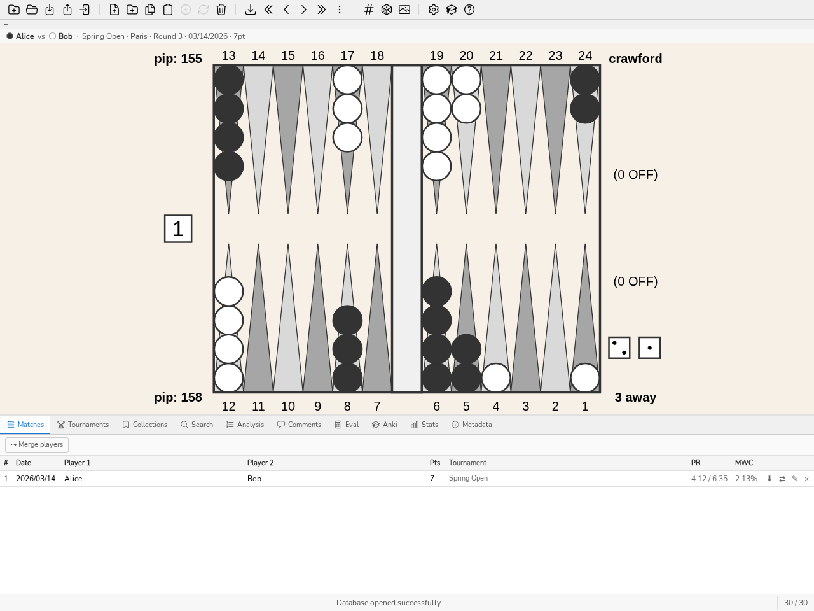
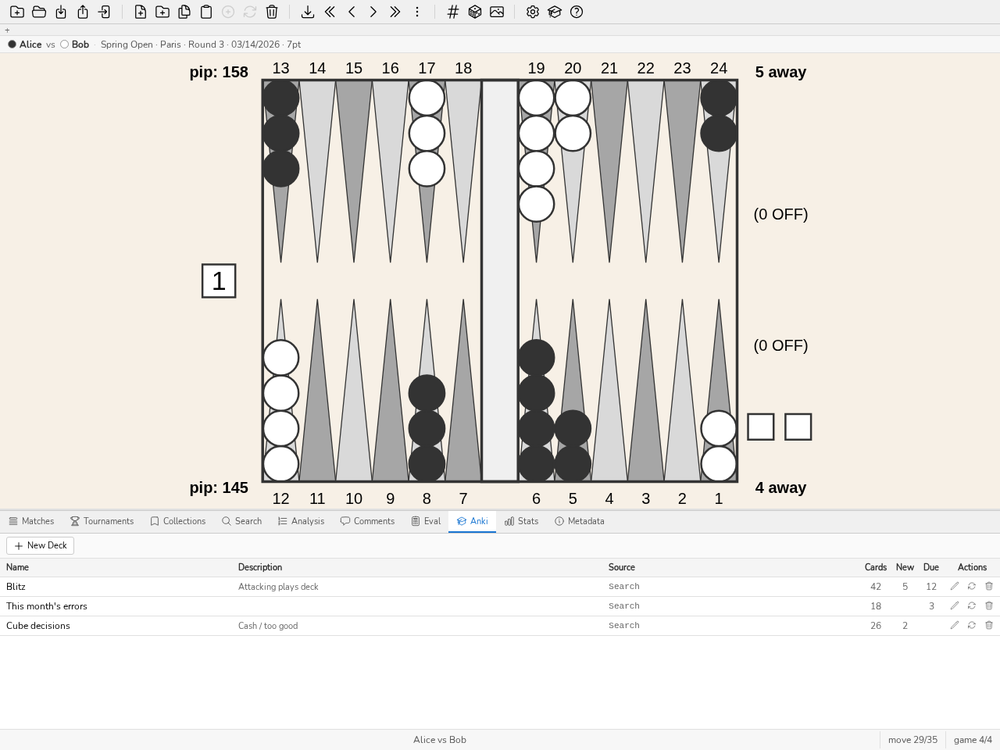

Руководство пользователя
Это руководство — практическое введение в blunderDB для быстрого освоения. Четыре сквозных руководства охватывают наиболее распространённые случаи использования; остальная часть руководства остаётся справочным каталогом, шаг за шагом, к которому можно обращаться по мере необходимости.
Начальный экран
Пока не открыта ни одна база, blunderDB предлагает четыре пути вместо пустой доски:
Импортировать мои матчи — главный путь. Он выстраивается сам: новая база, выбор ваших файлов (XG, GNU Backgammon, Jellyfish, BGBlitz), затем отчёт об импорте — «вот ваш PR и ваши худшие решения» — и, если захотите, очередь разбора. Это обещание инструмента, выполненное за две минуты, а не объяснённое.
Открыть базу-пример — три матча, коллекции, комментарии и колода Anki: достаточно, чтобы всё попробовать, ничего не принося.
Экскурсия — обход интерфейса, панель за панелью.
Открыть базу — файл
.db, который у вас уже есть.
Последняя открытая база предлагается отдельно и только если её файл ещё существует: кнопка, которая ломается при нажатии, хуже, чем её отсутствие.
Экран исчезает, как только открыта база. Неприметная ссылка убирает его на сессию, потому что панель Eval работает без базы: можно захотеть выставить позицию и оценить её, ничего не открывая.
Сквозные руководства
Мой первый импорт
Это руководство начинается с файла матча eXtreme Gammon (.xg) и заканчивается списком позиций, где вы проиграли больше всего.
Создайте базу данных. Кнопка Новая база данных на панели инструментов (или CTRL-N), выберите расположение и имя; расширение
.dbдобавляется автоматически.Импортируйте матч. Перетащите файл
.xgв окно blunderDB (или CTRL-I, затем выберите его). blunderDB определяет формат, импортирует позиции и уже присутствующий в файле XG анализ (ходы, решения по кубу, отметки), и показывает панель матчей после успешного импорта.Примечание
blunderDB берёт анализ, уже имеющийся в файле, и не делает его заново: матч, ни разу не проанализированный в XG, поэтому не покажет ни одной ошибки. Если отмечен флажок Автоматически анализировать после импорта (окно настроек, вкладка gammonNet), ограниченный и отменяемый пакет анализа в фоновом режиме заполняет позиции, оставшиеся без анализа. См. Конфигурация.
Просмотрите матч. Двойной щелчок по строке матча (или выбор строки и нажатие ENTER) открывает просмотр на последней посещённой позиции. Клавиши ВЛЕВО/ВПРАВО (или k/j) перелистывают ходы; PageUp/PageDown переключают партии.
Прочитайте анализ. CTRL-L показывает панель Анализа: лучшие ходы, их эквити и ошибку сыгранного хода (выделена в таблице). При решении по кубу та же клавиша показывает таблицу эквити куба и вердикт.

Панель Анализа во время просмотра матча: сыгранный ход выделен в таблице кандидатов-ходов.
Найдите самые крупные ошибки. Откройте панель Stats (CTRL-D), вкладка Dashboard: список Топ ошибок даёт десять самых дорогих ошибок, а щелчок по строке загружает соответствующую позицию в панель анализа. Для привыкших — то же самое с клавиатуры: команда
bl(илиblunders, ПРОБЕЛ открывает командную строку) загружает эти позиции напрямую, без составления запроса вручную. См. Панель Stats, чтобы уточнить этот выбор по игроку или диапазону дат после импорта нескольких матчей.
Изучение матча
После импорта нескольких матчей это руководство подробно описывает изучение конкретного матча — за рамками простого прохода предыдущего руководства.
Откройте панель матчей (CTRL-Tab). Она перечисляет все импортированные матчи, сортируемые по столбцу (игрок, дата, длина, турнир, PR). PR и стоимость MWC определены в Глоссарий.

Панель матчей: сортируемый список, PR и стоимость MWC по каждому матчу.
Откройте просмотр, дважды щёлкнув по строке, или выбрав её и нажав ENTER. Информационная панель над доской напоминает обоих игроков, турнир и счёт.
Переключайтесь между ходом шашками и решением по кубу клавишей d на одной и той же позиции, когда доступны оба анализа (один из них может отсутствовать в зависимости от содержимого импортированного файла).

Решение по кубу на панели Анализа: денежные эквити, ошибка каждого варианта, лучшее решение.
Комментируйте то, что вы наблюдаете: CTRL-P открывает панель Комментариев для показанной позиции — полезно для записи почему ход является ошибкой, а не только что он ею является.

Панель Комментариев: цепочка обменов, прикреплённая к показанной позиции.
Пометьте позицию, чтобы переиграть её позже: ПРОБЕЛ, чтобы открыть командную строку,
#с последующим ключевым словом (например#blitz), ENTER. См. Редактирование позиции, чтобы напрямую отредактировать позицию, если сыгранный ход — не тот, который вы хотите изучить.Выйдите из режима матча командой
m: библиотека возвращается в прежнее состояние, последняя посещённая позиция матча запоминается для следующего визита.
{kind=link}
Сессия Anki
Панель Anki превращает коллекцию или поиск в колоду карточек для повторения по алгоритму FSRS (интервальное повторение).
Соберите колоду. Две возможные отправные точки: вручную выбранная коллекция позиций, или поиск (CTRL-F) — например, все решения по кубу, отмеченные как ошибки. Команда
bl 30(30 худших ошибок) даёт хорошую отправную точку для первой колоды.Создайте колоду. Откройте панель Anki (CTRL-K), кнопка Новая колода, назовите колоду; она синхронизируется с выбранным поиском или коллекцией.

Панель Anki: одна колода на строку, всего карточек, новых и просроченных сегодня.
Повторяйте (кнопка Учить): каждая карточка показывает позицию, вы мысленно формулируете ответ, раскрываете решение (доску, анализ и возможный комментарий), затем оцениваете свою оценку от 1 (не угадал) до 4 (легко). FSRS соответственно распределяет следующий показ во времени. Ничто не заставляет раскрывать ответ, чтобы продолжить, если вы уверены в себе.
Разогрейтесь, не нарушая расписание (кнопка Тренировка): показывает случайные позиции из колоды, не затрагивая расписание FSRS — удобно перед турниром или для интенсивного повторения без сдвига сроков других карточек.
{kind=link}
См. Панель Anki для подробностей о параметрах (ограничение сессии, целевой уровень удержания, сброс колоды).
Развёртывание серверного режима за прокси
Серверный режим (blunderdb serve) предоставляет движок blunderDB по HTTP + JSON. Он никого не аутентифицирует (ADR-0005): он доверяет заголовку X-Tenant-ID именно в том виде, в каком его получает, и поэтому всегда должен находиться за обратным прокси, который сам аутентифицирует и устанавливает этот заголовок. Это руководство разворачивает опубликованный образ за минимальным nginx, с HTTP Basic-аутентификацией на один тенант, а затем показывает, как выдать каждому участнику его тенант. Это простейшая отправная точка, которую нужно адаптировать (SSO, клиентские сертификаты) под ваш контекст.
Запустите демон, привязанный к
127.0.0.1(никогда не открытый напрямую):docker run --rm -p 127.0.0.1:8080:8080 -v blunderdb-data:/data \ -e BLUNDERDB_BACKEND=sqlite -e BLUNDERDB_DSN=/data/blunderdb.db \ ghcr.io/kevung/blunderdb-serve:<version>
Создайте файл паролей для Basic-аутентификации:
htpasswd -c /etc/nginx/blunderdb.htpasswd alice
Настройте nginx, чтобы он аутентифицировал, а затем передавал запросы дальше, устанавливая
X-Tenant-IDсам — никогда не тот, что прислал клиент. Сертификат TLS — предпосылка этого руководства, а не его предмет: получите его заранее (Let’s Encrypt с помощьюcertbotили удостоверяющий центр вашей организации), затем укажите здесь два его файла. Порт 80 служит только для перенаправления на HTTPS.server { listen 80; server_name blunderdb.exemple.org; return 301 https://$host$request_uri; } server { listen 443 ssl; server_name blunderdb.exemple.org; ssl_certificate /etc/letsencrypt/live/blunderdb.exemple.org/fullchain.pem; ssl_certificate_key /etc/letsencrypt/live/blunderdb.exemple.org/privkey.pem; location /v1/ { auth_basic "blunderDB"; auth_basic_user_file /etc/nginx/blunderdb.htpasswd; proxy_set_header X-Tenant-ID ""; proxy_set_header X-Tenant-ID "1"; proxy_pass http://127.0.0.1:8080; } }
Обе директивы
proxy_set_headerчитаются именно в этом порядке: сначала стереть значение, полученное от клиента, затем подставить значение прокси.Проверьте с помощью подкоманды проверки состояния, которая не проходит через прокси:
docker exec <container> blunderdb healthcheck
Несколько участников, по тенанту каждому. Демон принимает в
X-Tenant-IDтолько положительное целое: сопоставить аутентифицированную учётную запись с этим целым — дело прокси. Блокmap, помещённый в контекстhttp, хранит это соответствие и для учётной записи, которой в нём нет, возвращает пустую строку — никогда1:map $remote_user $tenant_id { default ""; alice 1; bob 2; }
Тогда
locationявно отказывает несопоставленной учётной записи, вместо того чтобы дать ей добраться до демона:location /v1/ { auth_basic "blunderDB"; auth_basic_user_file /etc/nginx/blunderdb.htpasswd; if ($tenant_id = "") { return 403; } proxy_set_header X-Tenant-ID ""; proxy_set_header X-Tenant-ID $tenant_id; proxy_pass http://127.0.0.1:8080; }
Один тенант на участника предполагает бэкенд PostgreSQL: на SQLite, как в пункте 1 этого руководства, демон отвечает только на
X-Tenant-ID: 1и отклоняет любое другое значение. Репозиторий даёт эту полную схему вdeploy/nginx-tenant-proxy.conf, а её эквивалент для Caddy — вdeploy/Caddyfile.
См. Безголовый режим (сервер) для полного описания возможностей (маршруты, многопользовательский бэкенд PostgreSQL с Row-Level Security, миграция из SQLite) и опубликованного образа Docker.
Демонстрационный сценарий (3 минуты)
Чтобы представить blunderDB без личной базы данных, команда demo загружает демонстрационную базу данных (вымышленные позиции и матчи). Следующий сценарий укладывается в три минуты:
0:00 — Команда
demoв командной строке (или соответствующая кнопка на панели инструментов) загружает демонстрационную базу данных. Отображается панель матчей.0:30 — Откройте матч (двойной щелчок), пролистайте несколько ходов стрелками, покажите панель Анализа (CTRL-L) на сыгранном ходу с видимой ошибкой.
1:30 — Команда
bl: вид переключается прямо на худшие ошибки в базе данных, по всем позициям.2:15 — Панель Anki (CTRL-K): создайте колоду из этих позиций, запустите одну карточку в режиме Study, чтобы показать цикл вопрос/ответ/оценка.
2:45 — Вернитесь на панель Stats (CTRL-D), вкладка Dashboard, чтобы показать, как эта работа отражается со временем.
Создание новой базы данных
Чтобы создать новую базу данных, нажмите на панели инструментов кнопку Новая база данных. Выберите путь для сохранения базы и имя, затем подтвердите сохранение в системном окне.
Примечание
Расширение файлов баз данных blunderDB — .db.
Совет
Сочетания клавиш: CTRL-N. Команда: n
Открытие существующей базы данных
Чтобы загрузить существующую базу данных, нажмите на панели инструментов кнопку Открыть базу данных. Перейдите в папку, где находится база, выберите файл .db и подтвердите открытие в системном окне.
Совет
Сочетания клавиш: CTRL-O. Команда: o
Объединение базы данных
Чтобы объединить другую базу blunderDB с текущей открытой, нажмите на панели инструментов кнопку Объединить базу данных. Выберите файл .db и подтвердите.
Это и есть ответ blunderDB на вопрос «как синхронизировать базу между двумя машинами?»: база — это один файл, две разошедшиеся базы объединяются, а не согласуются, и дедупликация по отпечатку Зобриста делает работу. См. FAQ, «Можно ли синхронизировать базу между несколькими машинами?», о том, что службы синхронизации файлов умеют и чего не умеют — и о случае, когда несколько машин должны работать одновременно, который принадлежит режиму serve.
blunderDB выполнит интеллектуальное слияние двух баз данных:
Позиции, которых нет в текущей базе данных, будут добавлены вместе с их анализами и комментариями.
Существующие позиции будут обновлены: анализы будут дополнены при их отсутствии, а комментарии объединены (новые комментарии добавляются без дублирования существующих).
Сообщение покажет количество добавленных, объединённых и пропущенных позиций.
Объединение добавляет, оно не согласует: ничто не удаляется из текущей базы потому, что импортируемая этого не содержит.
Примечание
Для импорта требуется совместимость версий схемы обеих баз данных. Допускается импорт базы данных более ранней или равной версии в базу данных более поздней версии.
Осторожно
Операция импорта немедленно изменяет текущую открытую базу данных. Перед импортом другой базы данных рекомендуется создать резервную копию.
Редактирование позиции
Чтобы отредактировать позицию, нажмите TAB для открытия панели поиска и редактора позиций. Редактируйте позицию с помощью мыши:
нажимайте на пункты для добавления шашек. Левая кнопка мыши назначает шашки игроку 1. Правая кнопка мыши назначает шашки игроку 2. Чтобы расставить прайм, нажмите на начальный пункт, удерживайте кнопку и отпустите на конечном пункте. Нажмите на бар для постановки шашек на бар.
чтобы очистить позицию, дважды щёлкните на пустой области за пределами доски или нажмите клавишу BACKSPACE.
чтобы передать куб игроку 1, нажмите левую кнопку мыши на кубе. Чтобы передать куб игроку 2, нажмите правую кнопку мыши на кубе.
чтобы указать игрока, чья очередь хода, нажмите в область, предназначенную для кубиков.
чтобы изменить значение кубиков, нажмите левую кнопку мыши для увеличения значения кубика, правую — для уменьшения. Если грани кубиков пусты, это означает, что позиция является решением куба.
чтобы изменить счёт игроков, нажмите левую кнопку мыши для увеличения счёта, правую — для уменьшения.
Совет
Ввод позиции мышью для шашек выполняется так же, как в XG.
Добавление позиции в базу данных
После редактирования позиции открывается панель поиска.
Чтобы сохранить полученную позицию, нажмите CTRL-S или кнопку Сохранить позицию на панели инструментов.
Совет
Откройте командную строку и выполните: w
Добавление тега к позиции
Чтобы добавить тег toto к текущей позиции, откройте командную строку нажатием ПРОБЕЛ, введите #toto и подтвердите команду клавишей ENTER.
Удаление позиции
Чтобы удалить текущую позицию из базы данных, нажмите Del или кнопку Удалить позицию на панели инструментов.
Совет
В командной строке выполните d.
Осторожно
Перед этим запрашивается подтверждение. Удаление действительно происходит, но копия позиции хранится тридцать дней: см. Корзина.
Импорт позиции из XG
Чтобы импортировать позицию непосредственно из XG,
откройте в XG позицию для импорта и нажмите CTRL-C,
переключитесь на blunderDB и нажмите CTRL-V.
Примечание
Автовставка определяет формат источника (XG, GNUbg, BGBlitz), а также идентификатор OGID из OpenGammon.
Импорт матча
blunderDB может импортировать матчи из различных источников.
Поддерживаемые форматы:
eXtreme Gammon (XG): файлы .xg и .xgp (позиции)
GNUbg: файлы .sgf
Jellyfish: файлы .mat и .txt
BGBlitz: файлы .bgf и .txt
Импорт одного или нескольких файлов матча:
Нажмите CTRL-I или кнопку Импорт позиции или матча на панели инструментов.
Выберите один или несколько файлов для импорта.
blunderDB автоматически определяет формат и импортирует матч.
Окно хода работы показывает, сколько файлов импортировано, не удалось и пропущено (дубликаты), а затем отчёт об импорте.
Совет
Команда: i
Примечание
blunderDB автоматически определяет дубликаты и предотвращает повторный импорт матча, уже присутствующего в базе данных.
Импорт папки с матчами
Чтобы рекурсивно импортировать все файлы матчей из папки и её подпапок:
Нажмите CTRL-SHIFT-F или соответствующую кнопку в панели инструментов.
Выберите папку, содержащую файлы матчей.
blunderDB автоматически собирает и импортирует все распознанные файлы (.xg, .xgp, .sgf, .mat, .txt, .bgf).
Отчёт об импорте
Импорт заканчивается отчётом о том, что он только что принёс, а не простым подсчётом прочитанных файлов:
новые позиции, и среди них те, которые исходная программа отметила для изучения;
PR этого импорта — тот же показатель, что и в статистике, вычисленный только по этой партии. Он относится к вашим решениям, когда база знает ваше имя (поле Пользователь в окне идентичности), к обоим игрокам в противном случае, и отчёт говорит, к чему именно;
позиции, которые не оценил ни один движок, с кнопкой запуска анализа;
пять самых дорогих решений, кликабельных: один щелчок открывает позицию.
Нулевой PR при нуле решений — это не безупречная партия, а отсутствие анализа: отчёт так и пишет.
Каждый импорт записывается как партия. Командная строка находит их позже:
$ blunderdb list --db base.db --type imports
$ blunderdb list --db base.db --type imports --batch 3
Измеряемая половина отчёта — позиции без анализа, PR, худшие решения — пересчитывается при каждом чтении. Партия, позиции которой с тех пор были проанализированы, возвращает поэтому сегодняшние цифры, а не цифры дня импорта.
Очередь разбора
Отчёт отвечает на вопрос «что только что произошло?». Кнопка Пройти отвечает на следующий: «что я смотрю теперь?». Она открывает упорядоченную очередь позиций этого пакета, заслуживающих второго взгляда, и выводит их на доску по одной:
решения, которые чего-то стоили, самое дорогое первым — то, ради чего вы пришли;
позиции, отмеченные в исходной программе: вы уже сказали, в другом месте, что эта интересна;
спорные решения о кубе: ничего не потеряно, но правильный ответ был неочевиден.
Позиция появляется лишь один раз — под первой причиной, которая её заявляет: отмеченный бландер остаётся бландером, и предложить его дважды значило бы заставить очередь лгать о собственной длине. Проход ограничен пятьюдесятью позициями: очередь, которую никто не заканчивает, — это очередь, которую никто не начинает.
Во время прохода над доской появляется полоса: прогресс («3 / 25»), причина этой позиции, матч, из которого она взята, и действия. Три из них просто открывают панель, где действие уже живёт, — Комментарий, Коллекция, Карточка Anki, — потому что эти действия существуют со своими правилами, и переделывать их в полосе значило бы сделать их полукопиями. Пропустить идёт дальше, Назад исправляет щелчок, Выйти останавливает. Остальная часть приложения продолжает работать: именно это позволяет действовать, не покидая очередь.
Ничего не сохраняется, и ничто не отмечает, что позиция была просмотрена. То, что вы с ней делаете — комментарий, коллекция, карточка, — и есть запись, и больше хранить нечего. Поэтому запустить ту же очередь позже совершенно законно, и она будет той же.
Тот же список доступен в командной строке:
$ blunderdb list --db base.db --type imports --batch 3 --queue
Перетаскивание
blunderDB поддерживает перетаскивание. На окно blunderDB можно перетащить:
файлы матчей или позиций (.xg, .xgp, .sgf, .mat, .txt, .bgf) для их импорта,
файлы баз данных (.db) для их открытия или слияния с текущей базой данных,
папки для рекурсивного импорта всех содержащихся в них файлов.
Управление панелью матчей
Панель матчей (CTRL-Tab) позволяет:
просматривать список всех импортированных матчей (отсортированных от новейших к старейшим),
сортировать матчи по столбцам (игрок 1, игрок 2, дата, длина матча, турнир),
редактировать имена игроков или дату двойным щелчком по полям,
менять местами игрока 1 и игрока 2 с помощью кнопки перестановки,
назначать матч турниру,
удалять матч с помощью клавиши Del.
Управление коллекциями
Коллекции позволяют организовывать позиции в пользовательские группы. Для доступа к панели коллекций нажмите CTRL-B.
Создание коллекции:
Откройте панель коллекций (CTRL-B).
Введите имя новой коллекции в поле Новая коллекция… внизу панели, затем подтвердите нажатием ENTER.
Добавление позиций в коллекцию:
Выберите нужные позиции.
Добавьте их в коллекцию из панели коллекций.
Просмотр коллекции:
Дважды щёлкните на коллекции для просмотра её позиций. Порядок коллекций и позиций можно изменить перетаскиванием.
Совет
Команда: coll
Управление турнирами
Турниры позволяют организовывать импортированные матчи по событиям. Для доступа к панели турниров нажмите CTRL-Y.
Создание турнира:
Откройте панель турниров (CTRL-Y).
Введите название турнира в поле Новый турнир…, затем подтвердите нажатием ENTER.
Назначение матча турниру:
В панели матчей (CTRL-Tab) используйте выпадающее меню в столбце турнира для назначения матча.
Просмотр статистики производительности
Панель Stats позволяет просматривать показатели производительности (PR и стоимость MWC) на основе импортированных позиций.
Нажмите CTRL-D или перейдите на вкладку Stats в нижней панели.
Используйте панель фильтров для ограничения анализа по игроку, турниру, диапазону дат, типу решения или длине матча.
Нажмите на показатель для перехода непосредственно к соответствующим позициям.
Оценка позиции (панель Eval)
Панель Eval оценивает любую позицию — не только гонку. На позиции чистого выброса она вычисляет EPC (Effective Pip Count, см. Глоссарий) и другие статистики выброса; на любой другой позиции встроенный оценщик gammonNet выдаёт ходы-кандидаты или решение по кубу, офлайн, без XG и GNUbg.

Панель Eval: шансы на выигрыш/гаммон/бэкгаммон, эквити и ошибка каждого кандидатского хода, рассчитанные gammonNet.
Нажмите CTRL-E, щёлкните вкладку Eval на нижней панели, или выполните команду
epc: панель открывается с пустой доской, готовой к редактированию.Чтобы оценить уже показанную позицию (позицию из библиотеки или позицию из просматриваемого матча) вместо пустой доски, щёлкните правой кнопкой мыши по доске, затем Оценить эту позицию — показанная позиция отправляется как есть на панель Eval.
Вся доска редактируется щелчком или с клавиатуры: шашки, кости, счёт, положение куба, игрок, чей ход. Редактирование только шашек в доме (последние 6 пунктов) с обеих сторон переводит позицию в режим беароффа.
Результаты отображаются в реальном времени: в чистом беароффе — EPC, среднее число бросков, стандартное отклонение, pip count и wastage, вероятность выигрыша игрока, чей ход, и, в точной области, денежный вердикт по кубу; на любой другой позиции с выставленными костями — кандидатские ходы, отсортированные по эквити; без костей — решение по кубу. См. раздел «Методология и допущения панели Eval» руководства.
Чтобы тренироваться в оценке этих величин, установите флажок Défi (режим «Вызов»): результаты скрываются при каждом изменении и открываются зона за зоной, щелчком.
Примечание
Панель работает для обоих игроков одновременно.
Просмотр анализа позиции, импортированной из XG
Если позиция, проанализированная XG, GNUbg или BGBlitz, была импортирована в blunderDB, анализ можно отобразить, нажав CTRL-L.
Если позиция соответствует решению о ходе шашками, пять лучших ходов отображаются в отдельных строках. Для каждой строки информация приведена в следующем порядке: ход шашками, нормализованное эквити, ошибка эквити хода, шансы на выигрыш, гэммон и бэкгэммон игрока, шансы на выигрыш, гэммон и бэкгэммон противника, уровень анализа.
Если позиция соответствует решению куба, отображается стоимость каждого решения, а также шансы на выигрыш в данной позиции.
Когда для одной позиции присутствует несколько движков анализа (например, XG и GNUbg), дополнительный столбец указывает исходный движок для каждого анализа.
При навигации по матчу фактически сыгранный ход выделяется в списке ходов. Если позиция встречалась в нескольких матчах, указываются все сыгранные ходы.
Совет
При нажатии на ход в панели анализа на доске отображаются соответствующие стрелки.
Экспорт позиции в XG
Чтобы экспортировать позицию из blunderDB в XG,
откройте в blunderDB позицию для экспорта и нажмите CTRL-C,
переключитесь на XG и нажмите CTRL-V.
Просмотр различных позиций
Для просмотра различных позиций текущей библиотеки используйте клавиши LEFT и RIGHT. Клавиша HOME переходит к первой позиции. Клавиша END переходит к последней позиции.
Чтобы отобразить снятие шашек слева, нажмите CTRL-LEFT. Чтобы отобразить снятие шашек справа, нажмите CTRL-RIGHT.
Поиск позиций по критериям
Для поиска типов позиций:
нажмите TAB для открытия панели поиска,
отредактируйте структуру позиции для поиска. blunderDB отфильтрует позиции, содержащие как минимум введённую структуру шашек. При неуверенности, для получения максимального количества результатов, очистите позицию клавишей BACKSPACE. При необходимости отредактируйте позицию куба и счёт.
Панель поиска предлагает две структуры шашек, выбираемые с помощью вкладок Не менее и Кроме в верхней части панели:
Не менее (по умолчанию): blunderDB фильтрует позиции, содержащие как минимум введённую структуру шашек;
Кроме: blunderDB исключает позиции, содержащие одну из введённых шашек. Доска обводится красным при редактировании этой структуры. Позиция отклоняется, если она содержит хотя бы один из нарисованных элементов (например, нарисовав шашку на пунктах 1, 3 и 5, вы сохраните только позиции без шашек на этих пунктах). Количество шашек на пункте не ограничено: указание 3 шашек на пункте исключает позиции с 3 и более шашками в этом месте (полезно для поиска закрытого пункта без запасной шашки). Два быстрых щелчка по пункту помечают его как обязательно пустой (красная штрихованная клетка, без шашек любого цвета); одиночный щелчок по этому пункту снимает отметку.
Если пункт входит в обе структуры, критерий Кроме имеет приоритет, когда он противоречит критерию Не менее.
Метод 1 (простой):
Откройте окно поиска (CTRL-F).
Добавьте и настройте фильтры поиска.
Подтвердите нажатием кнопки Поиск.
Метод 2 (расширенный):
откройте командную строку нажатием ПРОБЕЛ,
введите s, добавьте дополнительные фильтры при необходимости (например, cube или score для учёта куба и счёта соответственно. Смотрите Фильтры поиска для полного списка доступных фильтров).
подтвердите запрос нажатием ENTER.
Отображаемые позиции — это позиции из базы данных, соответствующие критериям поиска, введённым пользователем.
Что дальше
Это руководство охватывает наиболее частые сценарии. В blunderDB есть ещё несколько возможностей, подробно описанных в руководстве:
Интервальное повторение (Anki) — панель Anki (CTRL-K) превращает коллекцию или поиск в колоду карточек для повторения по алгоритму FSRS, а свободный режим тренировки (cram) не сбивает расписание. См. Панель Anki.
Несколько видов — панель вкладок под панелью инструментов позволяет держать открытыми параллельно несколько независимых рабочих пространств (например, поиск и просмотр матча), у каждого свой список позиций и свой контекст. См. Вкладки представлений.
Распространение с водяным знаком — экспорт можно подписать вашей идентичностью издателя (неподделываемый водяной знак, указывающий происхождение файла) и защитить паролем на время передачи. См. Распространение базы: происхождение и пароль.
Экскурсии и демонстрационная база — команда
tour(псевдонимtutorial) открывает каталог экскурсий по интерфейсу, а командаdemoзагружает пример базы, чтобы познакомиться с инструментом без собственной базы. См. Обучающие туры и образец базы данных.Загрузить худшие ошибки — команда
bl(илиblunders) загружает худшие ошибки (эквити или MWC) прямо в вид анализа, согласно текущему фильтру панели статистики, без ручного поиска. См. Панель Stats.
Как прогрессировать с blunderDB
Помимо приведённых выше руководств, простой еженедельный распорядок позволяет извлечь максимум из blunderDB для прогресса:
Импортируйте матчи за неделю (перетаскивание или рекурсивный импорт папки при нескольких файлах) как можно скорее после того, как вы их сыграли — память о контексте быстро стирается.
Отфильтруйте самые дорогие решения: команда
bl(худшие ошибки) или панель Stats, отфильтрованная по периоду и типу решения (шашки / куб), который сильнее всего влияет на PR.Комментируйте каждую просмотренную позицию: что было упущено, какая структура виновата. Письменный комментарий требует объяснения — позиция, просто просмотренная без единого слова, забывается так же быстро, как была упущена.
Соберите колоду Anki из этих прокомментированных позиций: интервальное повторение возвращает те же мотивы, пока они не станут рефлексами.
Следите за PR по турнирам на вкладке Progression панели Stats (Панель Stats): кривая, снижающаяся от турнира к турниру, — единственный сигнал, который никогда не лжёт.
Этот распорядок оправдан только в том случае, если его придерживаются — десять минут в неделю, постоянно, стоят больше, чем разовый разбор, который затем бросают.